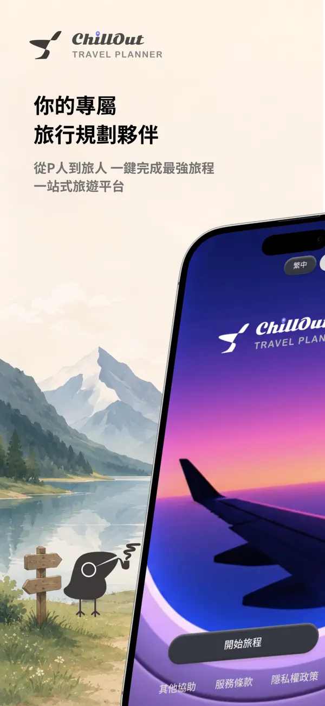
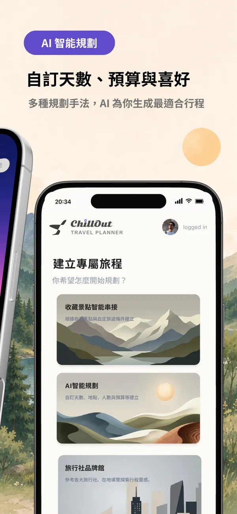
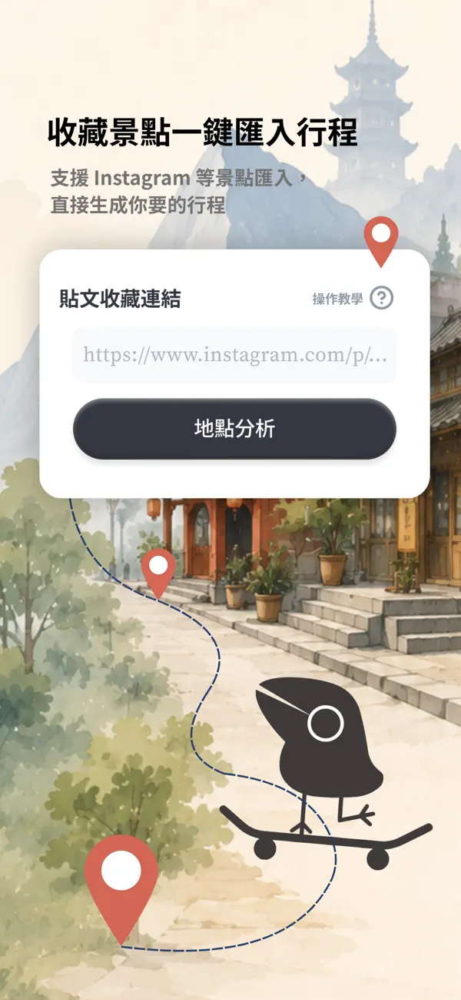
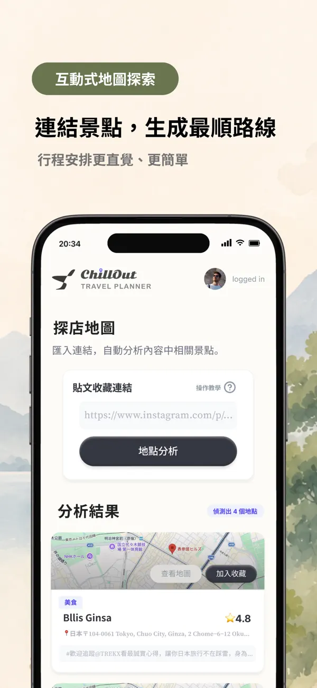

貼上 IG 旅行連結
把你平常收藏、朋友傳來、限動看到的景點先丟進 ChillOut。
Free iOS App · 5.0 rating on App Store
還在開十幾個分頁排行程？ChillOut 幫你整理 Instagram 景點、收藏清單與旅行想法，用 AI 生成可編輯行程，旅行後還能做成回憶錄。


把你平常收藏、朋友傳來、限動看到的景點先丟進 ChillOut。
輸入天數、目的地、預算與偏好，快速得到第一版可編輯路線。
旅行結束後整理成旅遊手冊與回憶頁，方便收藏與分享。
Why people try it
ChillOut 的第一個下載理由很簡單：旅行規劃太碎了。它把收藏景點、AI 規劃、手冊生成放進同一個流程，讓自由行不用從空白開始。
現在開始排第一趟

Try this prompt
我想安排東京五天四夜自由行，想去咖啡廳、神社、夜景景點，預算中等，不想每天太趕，幫我排一版可以編輯的行程。